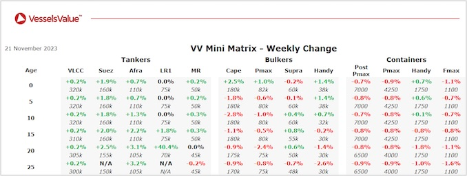

inWeekly Vessel Valuations Report21/11/2023

Bulkers:Mid-age Capesizes decreased whilst resales increased owing to sales of vessels such as Agis. Newer Handysize increased owing to sales of vessels such as Aprilla
Capesize BC Agis (180,300 DWT, Sep 2023, Namura) sold to Arcelor Mittal Shipping for USD 67.5 mil, VV Value USD 64.20 mil
Panamax BC Katerina (76,000 DWT, May 2004, Tadotsu Tsuneishi) sold to undisclosed buyers for USD 10.2 mil, VV Value USD 10.04 mil
Supramax BC Ocean Destiny (58,800 DWT, Jun 2008, Tadotsu Tsuneishi) sold to Pioneer Marine for USD 13.80 mil, VV Value USD 14.05 mil
Handy BC Aprilla (36,500 DWT, Jan 2017, Jiangdong) sold to unknown Greek buyers for USD 20.2 mil, VV Value USD 18.4 mil
Tankers: Older Aframax tonnage continued to increase last week due to the deals of P Kikuma and Torm Marina
Aframax P Kikuma (115,900 DWT, Nov 2009, Samsung) sold to undisclosed buyers for USD 39.30 mil, VV Value USD 38.90 mil
LR2 Torm Marina (109,700 DWT, Nov 2007, Dalian Shipbuilding Industry Corp) sold to Unknown Chinese buyers for USD 36.60 mil (DD Due), VV Value USD 35.14 mil
MR2 (Chem/Product) Seaways Lorain (51,200 DWT, Aug 2008, STX Offshore) sold to undisclosed buyers for USD 24.50 mil (SS/DD Passed), VV Value USD 23.74 mil
Containers: Second-hand values tracked earnings depreciating across the board. 10YO and 15YO values depreciated c.0.9% for Panamax and smaller segments. Whereas Post Panamax and larger showed more strength losing c.0.5% on average
